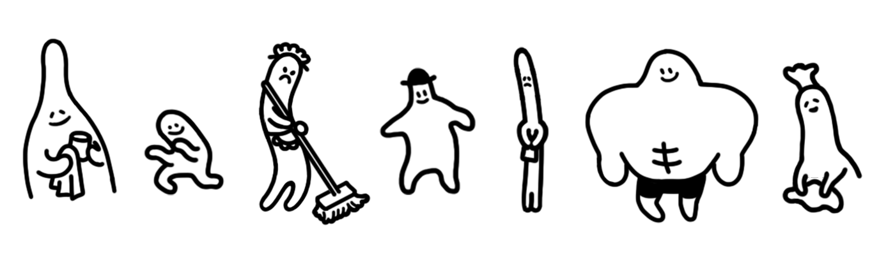

TOTT

こんにちは、『ホテル・ソウルズ』のアート担当のトットです。（アートと企画、ゲーム開発の細かいこともヌンヌンと一緒にやりました）
今日は短いポストモーテム（振り返り）を通じて『ホテル・ソウルズ』のアートワークとデザインがどのように誕生したのか書いてみます。
『ホテル・ソウルズ』のアートワークをデザインしながら、私の目標だったのは、まず、「はっきりとした特色があり、記憶に残るアートワークを作りたい」ということでした。
2番目には、「『ホテル・ソウルズ』というゲームの雰囲気が視覚的に最もよく表現できる方法を使う」ことでした。この2つの目標が合わさって、現在の『ホテル・ソウルズ』のアートワークが誕生しました。
この目標のもとに使用した視覚的な要素がいくつかあります。『ホテル・ソウルズ』で一番最初に目にする視覚的要素は、「ディゾルブ（＝溶解）」です。

ディゾルブはディザ（訳注：ディザリング。画像処理の一種）よりもラフな感じを与える効果です。散らかった感じがするため、欠点もありますが、空いているスペースを平板にならないように埋めてくれる利点があって、個人的に愛用している効果です。
散らばる感じのディゾルブは、古くなってすぐに消えてしまうような、謎が隠されたホテルの雰囲気を表現するのに役立ちました。

一方、ホテル内のキャラクターは、こういったディゾルブが適用された背景やオブジェクトと対照的に、かわいくてまんまるです。
ホテルのスタッフと主人公のかわいいビジュアルは、ゲームの恐ろしい雰囲気を解消してくれるありがたい存在です。
このような対比は、『ホテル・ソウルズ』の主題ともかみ合う部分があるので、
キャラクターの形とアニメーションは常に出来るだけかわいく描こうと努力しました。
特に、キャラクターの表情を描く時が一番楽しかった記憶がありますね。
『ホテル・ソウルズ』のオブジェクトやキャラクターは総じて黒と白で描かれています。
黒と白を除くと、他の色はマップの背景だけ、層を区分するために限定的に使用されています。
『ホテル・ソウルズ』のメイン画面とSteamストアに使われるバナーなどでも常に同じ色が使用されます。
大半が暗い夜の感じを与える冷たい色です。
（余談ですが、ホテルのデザインは、1909年に完成したという「スタンリーホテル」が参考になりました。スティーブン・キングの小説『シャイニング』の舞台になりましたね。）


『ホテル・ソウルズ』のアートワークは、視覚的な特色を明確にしており、このような手法には、もちろん欠点もあります。どうしても見慣れないものに感じられるというのが最大の欠点でしょう。
しかし、そのような欠点は、実際には『ホテル・ソウルズ』を表現するためにとても適切です。『ホテル・ソウルズ』は、結局、不思議で恐ろしい秘密があるホテルの話ですからね。
このような『ホテル・ソウルズ』のアートワークを好んで下さる方が多く、私はいつも喜んでいます。加えて、独特なアートワークを生かすために献身的な仕事をしてくれたヌンヌンにも感謝の言葉を伝えたいと思います。
次のポストモーテムは、もう少し個人的に感じた点と、細かい話をしてみましょう。